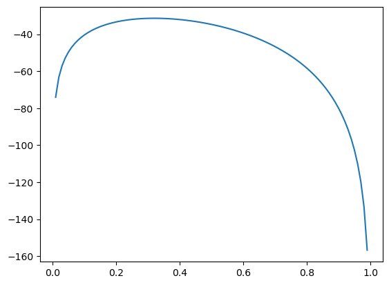
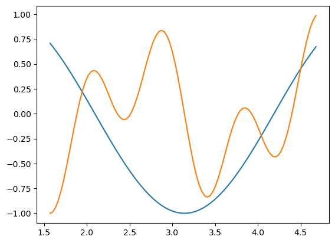

import numpy as np
import matplotlib.pyplot as plt 02wk-1: Quiz 1 (예상문제)

Note
- 이 문항은 예시일 뿐이며, 본 문항들이 그대로 시험에 출제되지는 않음.
- 일부문항은 숫자를 바꿔서 출제되거나 그대로 출제될 수 있음.
- 일부문항은 모범답안이 제시되어 있음. (참고용으로..)
- 예상문제를 풀기 어려운 경우 질문가능함 (힌트를 주거나 풀이를 알려줄 수 있음, 혹은 학생이 풀이한 답안을 검토하고 피드백 줄 수 있음)
Warning
- 모든 문항은 부분점수 없음. (예를들어 문제1-(1)의 경우
p까지는 생성하였지만 그래프를 그리지 못한 경우 0점처리함) - 일부문항은 부분문제를 모두 맞출경우만 정답으로 인정함. 예를들면 문제2와 같은 경우.
.ipynb파일 형태로 제출된 답안지만 채점하며 그 외의 형식 (.hwp등)은 채점하지 않음. 즉 0점 처리함. 제출방법 모르면 물어볼것!
Caution
- 전북대 학생들을 시험당일 학생증을 지참할 것. (출석체크 및 본인확인) 학생증 외에 신분증 여권등도 가능.
- 부정행위 (카카오톡 채팅을 통한 코드공유, 생성형모델 사용, 대리시험 등) 적발시 F 처리함.
- 퀴즈 중 지각할 경우 지각사실을 기록함. 하지만 별다른 감점은 하지 않음.
문제 1.
(1) \(0<p<1\) 인 범위에서 \(p(1-p)\)의 그래프를 그려라. – 5점
(풀이)
p = np.linspace(1/100,1,100)[:-1]
parray([0.01, 0.02, 0.03, 0.04, 0.05, 0.06, 0.07, 0.08, 0.09, 0.1 , 0.11,
0.12, 0.13, 0.14, 0.15, 0.16, 0.17, 0.18, 0.19, 0.2 , 0.21, 0.22,
0.23, 0.24, 0.25, 0.26, 0.27, 0.28, 0.29, 0.3 , 0.31, 0.32, 0.33,
0.34, 0.35, 0.36, 0.37, 0.38, 0.39, 0.4 , 0.41, 0.42, 0.43, 0.44,
0.45, 0.46, 0.47, 0.48, 0.49, 0.5 , 0.51, 0.52, 0.53, 0.54, 0.55,
0.56, 0.57, 0.58, 0.59, 0.6 , 0.61, 0.62, 0.63, 0.64, 0.65, 0.66,
0.67, 0.68, 0.69, 0.7 , 0.71, 0.72, 0.73, 0.74, 0.75, 0.76, 0.77,
0.78, 0.79, 0.8 , 0.81, 0.82, 0.83, 0.84, 0.85, 0.86, 0.87, 0.88,
0.89, 0.9 , 0.91, 0.92, 0.93, 0.94, 0.95, 0.96, 0.97, 0.98, 0.99])plt.plot(p,p*(1-p))(2) \(0<p<1\) 의 범위에서 \(p(1-p)\)를 최대로 만드는 \(p\) 값을 파이썬을 이용하여 계산하라. – 5점
# 힌트: 손으로 풀어보면 답은 0.5라는건 알겠죠? (3) 아래와 같이 50개의 숫자를 나열한 배열 \({\bf x}=[x_1,x_2,\dots,x_n]\)을 상상하자. – 10점
x = np.array([0, 1, 1, 0, 1, 0, 1, 0, 0, 0, 1, 0, 0, 0, 0, 1, 0, 1, 0, 0, 0, 1,
0, 0, 0, 1, 0, 1, 1, 0, 1, 0, 1, 0, 0, 0, 0, 0, 0, 1, 0, 0, 1, 0,
0, 0, 0, 0, 1, 0])
xarray([0, 1, 1, 0, 1, 0, 1, 0, 0, 0, 1, 0, 0, 0, 0, 1, 0, 1, 0, 0, 0, 1,
0, 0, 0, 1, 0, 1, 1, 0, 1, 0, 1, 0, 0, 0, 0, 0, 0, 1, 0, 0, 1, 0,
0, 0, 0, 0, 1, 0])위와 같은 \(x_i\)에 대하여 아래와 같은 함수 \(l(p)\)를 정의하고 \(0<p<1\)에서의 \(l(p)\)의 그래프를 그려라.
\[l(p)=\sum_{i=1}^nx_i \log p +\left(n-\sum_{i=1}^{n}x_i \right)\log(1-p)\]
hint
- \(n=50\) 으로 설정해야겠죠?
- \(\sum_{i=1}^{50}x_i=s\)를 미리 계산하고 \(s\)를 이용하여 함수 \(l(p)=s\log p + (50-s)\log(1-p)\) 를 정의하세요.
# 시각화예시/tmp/ipykernel_74601/1320384517.py:2: RuntimeWarning: divide by zero encountered in log
return np.log(p)*np.sum(x) + (50-np.sum(x))*np.log(1-p)
(4) 파이썬을 이용하여 아래를 근사계산하라. – 5점
\[\lim_{h \to 0}\frac{l(0.32+h)-l(0.32)}{h}\]
# 힌트: 답은 0이에요(5) \(0<p<1\)의 범위에서 \(l(p)\)를 최대로 만드는 \(p\)의 값을 구하라. 즉 \(\underset{p}{\operatorname{argmax}} l(p)\)를 구하라. – 5점
# 힌트: 답은 0.32
Warning
1-(5)에서 문제 오류가 있어 수정했습니다.
- 수정전: “\(0<p<1\)” 의 범위에서 \(l(p)\)를 최대값을 구하라.”
- 수정후: “\(0<p<1\)” 의 범위에서 \(l(p)\)를 최대로 만드는 \(p\)의 값을 구하라. 즉 \(\underset{p}{\operatorname{argmax}} l(p)\)를 구하라.”
문제 2.
모두 맞출 경우만 정답으로 인정
(1) 아래의 list에서 마지막 원소를 뽑는 코드를 작성하라.
lst = [11,22,33,44,55]
lst [11, 22, 33, 44, 55](풀이)
lst[-1]55(2) 아래의 list에서 마지막 2개의 원소를 제외하고 뽑는 코드를 작성하라.
lst = [11,22,33,44,55]
lst[11, 22, 33, 44, 55](풀이)
lst[:-2][11, 22, 33](3) lambda를 이용하여 \(f(x)=x^2+1\)에 대응하는 함수를 선언하라.
(4) 아래의 코드를 실행하여 x를 생성하라.
np.random.seed(43052)
x = np.random.rand(50)
xarray([0.81768226, 0.04953212, 0.83868626, 0.61977707, 0.12254052,
0.11712779, 0.8795562 , 0.97941543, 0.90986893, 0.96667407,
0.59164493, 0.84014933, 0.89714578, 0.76530684, 0.40073371,
0.38061141, 0.4305124 , 0.40991094, 0.00972398, 0.59732079,
0.8852783 , 0.31328711, 0.6141936 , 0.36838019, 0.08044368,
0.47142422, 0.43324944, 0.22441988, 0.01174913, 0.91587271,
0.88325068, 0.32707103, 0.45758847, 0.55495369, 0.55845013,
0.75018778, 0.29947949, 0.85888413, 0.60465549, 0.00651133,
0.80605888, 0.06988897, 0.76763953, 0.72438164, 0.06247252,
0.97571034, 0.76681327, 0.12138996, 0.14946193, 0.08540348])생성된 값의 최대값을 출력하는 파이썬 코드를 작성하라.
# 힌트: 답은 0.9794154308159254(5) 아래의 코드를 실행하여 x를 생성하라.
np.random.seed(43052)
x = np.random.rand(50)
xarray([0.81768226, 0.04953212, 0.83868626, 0.61977707, 0.12254052,
0.11712779, 0.8795562 , 0.97941543, 0.90986893, 0.96667407,
0.59164493, 0.84014933, 0.89714578, 0.76530684, 0.40073371,
0.38061141, 0.4305124 , 0.40991094, 0.00972398, 0.59732079,
0.8852783 , 0.31328711, 0.6141936 , 0.36838019, 0.08044368,
0.47142422, 0.43324944, 0.22441988, 0.01174913, 0.91587271,
0.88325068, 0.32707103, 0.45758847, 0.55495369, 0.55845013,
0.75018778, 0.29947949, 0.85888413, 0.60465549, 0.00651133,
0.80605888, 0.06988897, 0.76763953, 0.72438164, 0.06247252,
0.97571034, 0.76681327, 0.12138996, 0.14946193, 0.08540348])생성된 값중 0.6와 가장 가까운 값을 출력하는 파이썬 코드를 작성하라.
# 힌트: 답은 0.5973207921703583문제 3.
(1) \(\frac{\pi}{2}<x<\frac{3}{2}\pi\) 에서 \(f(x)=\sin(\frac{3}{2}x)\) 와 \(g(x)=\cos(2x)\sin(5x)\) 의 교점의 수를 구하여라.
(풀이)
x = np.linspace(np.pi/2,3/2*np.pi,100)[:-1]
xarray([1.57079633, 1.60252959, 1.63426285, 1.6659961 , 1.69772936,
1.72946262, 1.76119588, 1.79292914, 1.8246624 , 1.85639566,
1.88812892, 1.91986218, 1.95159544, 1.9833287 , 2.01506195,
2.04679521, 2.07852847, 2.11026173, 2.14199499, 2.17372825,
2.20546151, 2.23719477, 2.26892803, 2.30066129, 2.33239455,
2.3641278 , 2.39586106, 2.42759432, 2.45932758, 2.49106084,
2.5227941 , 2.55452736, 2.58626062, 2.61799388, 2.64972714,
2.6814604 , 2.71319366, 2.74492691, 2.77666017, 2.80839343,
2.84012669, 2.87185995, 2.90359321, 2.93532647, 2.96705973,
2.99879299, 3.03052625, 3.06225951, 3.09399276, 3.12572602,
3.15745928, 3.18919254, 3.2209258 , 3.25265906, 3.28439232,
3.31612558, 3.34785884, 3.3795921 , 3.41132536, 3.44305862,
3.47479187, 3.50652513, 3.53825839, 3.56999165, 3.60172491,
3.63345817, 3.66519143, 3.69692469, 3.72865795, 3.76039121,
3.79212447, 3.82385772, 3.85559098, 3.88732424, 3.9190575 ,
3.95079076, 3.98252402, 4.01425728, 4.04599054, 4.0777238 ,
4.10945706, 4.14119032, 4.17292358, 4.20465683, 4.23639009,
4.26812335, 4.29985661, 4.33158987, 4.36332313, 4.39505639,
4.42678965, 4.45852291, 4.49025617, 4.52198943, 4.55372268,
4.58545594, 4.6171892 , 4.64892246, 4.68065572])plt.plot(x,np.sin(1.5*x))
plt.plot(x,np.cos(2*x)*np.sin(5*x))
# 답 3개(2) \(a_n=\frac{1}{n(n+1)}\) 일때 \(S_1,\dots,S_{20}\)을 구하여라.